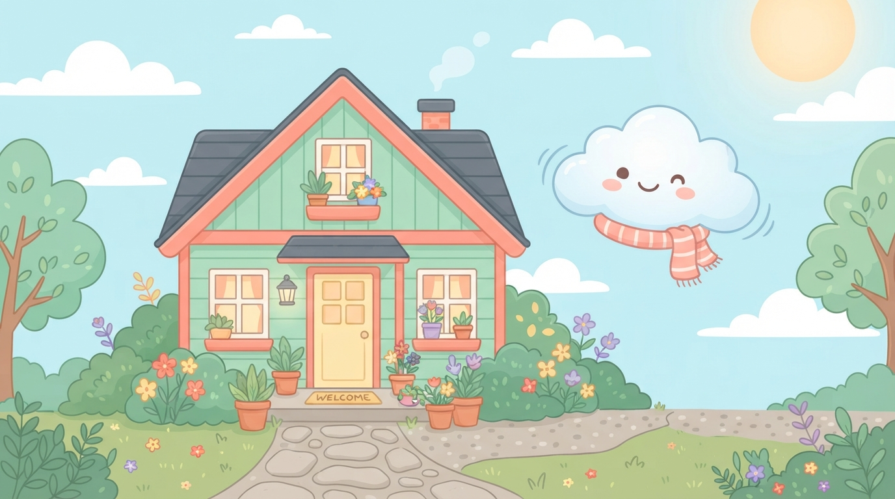

Family & Community Clean-Air Companion
Breathe Easier This Winter — Small Daily Swaps, Big Clean-Air Wins!
Tailor your city, home, and commute below to get friendly AI guidance, cozy indoor air hacks, and real-time PM2.5 & CO₂ impact tracking.

Outdoor vs. WHO 24h Safe
78 µg/m³
5.2× WHO
Kolkata winter 2025–26 avg (CREA)
Estimated Indoor PM2.5
42 µg/m³
-46% vs outdoor
Unfiltered baseline: ~76.3% of outdoor
Personal Exposure Drop
34%
4 actions active
Combined timing, filtration & seal gains
Community CO₂ Avoided / Wk
12.4 kg
1 household
Based on EPA 248 g CO₂/km car baseline
Tailor to Your Household & Lifestyle
Indoor Air Filtration